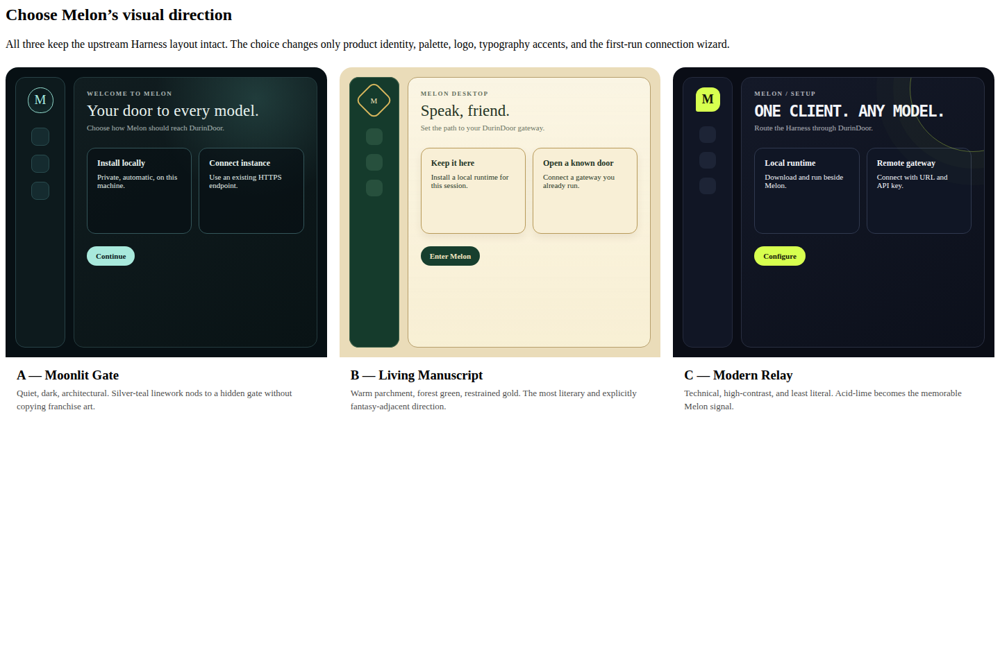

Candidate A

Candidate B
Live setup CSS in apps/melon-desktop/src/styles.css uses the same Relay tokens: page #0a0d16, panel #111625, lime mark #d7ff4f / ink #10130a, clipped-corner brand tile, mono title, two-column choice grid. No Tauri screenshot yet.
Latest critic verdict
Round 1, 2026-08-17. Token and contrast check only — not a viewport A/B win. Computed WCAG 2.2 AA ratios on the live setup palette all pass (text 16.55, eyebrow 15.71, secondary 9.55, attribution 6.21, mark 16.35). Hierarchy matches Relay: rail + lime M, uppercase lime eyebrow, huge mono title, two choice cards. Largest remaining gap is the missing real Tauri screenshot at 1440×960 and 1024×768; mocks and CSS inspection cannot award the Gauntlet.
Largest remaining gap
Capture the running Tauri setup window at both viewports and run a blind A/B against the checked-in Modern Relay PNGs.
Next active round
Launch pnpm run melon:dev, screenshot choice + external + error at 1440×960 and 1024×768, then judge those frames — not this ledger page.